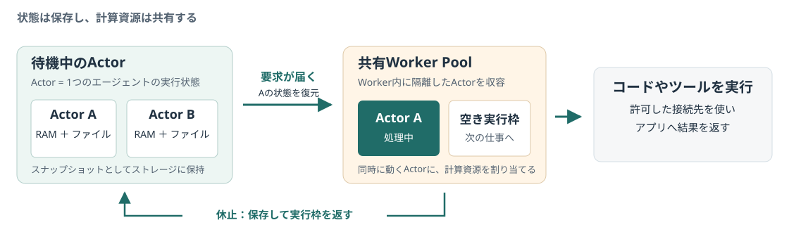

待機中
状態を保存する
ActorのRAMとファイルを、スナップショットとして保持。
01 / 08 · AGENT SUBSTRATE ON GKE
AIエージェントは、人の返答や次の指示を待つ間も、実行環境を持ち続けがちです。
Agent Substrateは状態を保存して休止し、必要なときに共有の実行環境で再開する基盤です。
ONE-PAGE BRIEF · 状態と計算資源を分ける

待機中
ActorのRAMとファイルを、スナップショットとして保持。
要求が届く
起動済みの隔離環境に状態を復元し、処理を実行。
アプリが休止
更新した状態を保存し、別のActorが資源を使えるようにする。
公式資料から：人と対話するAIの待機時間
AIアプリの開発者
コーディング支援や長期のアシスタントでは、会話だけでなく、実行中の状態や作業ファイルも次の依頼に引き継ぎたい。
環境を消すなら、復元する仕組みを自分で用意する必要がある。
基盤・運用の担当者
各エージェントに専用Podを割り当てたままにすると、待機中でもメモリや実行枠を占有する。
利用者の総数と、同時に処理する数を分けて考えたい。
特に合うのは、状態を保ち、待ち時間が長いアプリ。
常に計算し続ける処理と、休止できる対話型AIでは、資源の使い方が異なります。
GKEはGoogle CloudのKubernetesサービス。Podはコンテナ化した処理を動かす基本単位です。
公式仕様：エージェントの状態と実行場所を切り離す
エージェントごとに実行環境を確保
待機中でも、Podを残すと資源を占有。
Actorの状態を、共有Worker内の実行枠へ割り当てる
休止したActorのCPU・メモリを、別の処理に使う。
仕組みの比較図です。1つのWorker Podに複数のActorを収容できます。図の個数は容量や削減率の推奨値・測定値ではありません。
費用は、同時実行数と余裕の持たせ方で変わる。
費用上の留意点（本資料の整理）：待機用のWorker、システム基盤、保存・転送などの費用は残ります。アプリの休止が、請求全体のゼロを意味するわけではありません。
公式仕様：アプリからの要求に合わせたライフサイクル
01 · 指定
アプリが、どのActorへのリクエストかを指定する。
02 · 復元
休止中なら、保存したRAMとファイルをWorkerの空き枠に戻す。
03 · 実行
実行先へ要求を届け、Actorが仕事を進める。
04 · 休止
アプリが休止を指示。状態を保存し、Workerの実行枠を空ける。
作業中のメモリと、ローカルのファイル。保存方式によっては、クラウドへの転送が休止完了より遅れます。
DBやMCPサーバーへの接続は保持されません。再開時にアプリが再接続する必要があります。
公式資料は1秒未満での復元を説明しています。本資料では実測しておらず、利用環境での応答時間を保証する値として扱いません。
公式仕様と運用側の責任：隔離の外に制御を置く
gVisor / microVM
実行環境を隔離
通信ポリシーを確認
許可された要求に認証情報を付与
許可したAPIやツール
必要な範囲だけ接続
公式OSSのセキュリティモデルを要約した概念図。矢印は外向き通信経路です。認証情報の扱いは、採用する構成とポリシーに応じた設定が必要です。
隔離された実行環境と、既定で拒否するネットワーク制御。秘密情報をActorの外で扱う設計。
利用者を認証し、どのActorを使えるかを決める。接続先や変更操作の権限、重要な操作の承認もアプリ側で設計する。
公式Security Guideには、保存データのActor単位の暗号化・復元認可など、開発予定の項目もあります。隔離があっても、許可したAPIへの誤操作はアプリ側で対策します。
公式仕様：導入前に確かめる条件
GKE Standard 1.37以降。制御プレーンとノードプールが対象。Autopilotは非対応。
Workload Identity Federation for GKEが必要。Cloud Storageに状態を保存する。
独自のgVisorランタイムを含む。対象ノードプールでGKE Sandboxを有効にしない。
ActorコンテナへのGPUパススルーは非対応。GPUノードに置くだけではGPUを使えない。
E2など混在CPU構成は非対応。同一ActorTemplateは同じVMタイプへ。microVMはx86と仮想化対応が必要。
公式インストーラーはExtendedチャネルに非対応。Cloud Shellではインストール不可。
費用比較には、ノードと保存領域の両方を含める。
必要な余剰容量、スナップショット保存、外部モデルAPIなども含めて、自分の構成で見積もります。料金削減率は未検証です。
上記は導入判断に関わる抜粋です。高密度時のカーネル設定など、追加条件は公式の要件一覧を確認してください。
本資料の提案：小さな検証から適用を判断する
最初は、機密情報を持たないテスト用のコーディング支援1種類に絞る。AIの賢さより、状態・接続・権限の扱いを検証します。
メモリに作業番号を持ち、テストファイルを更新。休止と再開を挟んで、続きを正しく処理できるか確認。
記録：値とファイルの一致、復元失敗、二重実行
テスト用APIへ接続し、休止後に再接続。タイムアウトや再試行で同じ変更を重複実行しないか確かめる。
記録：再接続結果、再試行、外部変更の重複
許可したテスト先だけに接続。許可外の通信を拒否し、Actorから不要な秘密情報を読めないか確認。
記録：許可・拒否結果、監査に残る情報
待機と同時実行を変えて、専用Podを維持する構成と比較。準備済みWorkerが不足する場面も試す。
記録：応答時間のp95、失敗率、ノード・保存の費用
採用条件：状態が正しく復元し、権限の境界を守り、必要な応答時間を満たすこと。運用の追加負担まで含めて効果が出るかを判断する。
このページは本資料の検証提案です。導入・実行・性能測定は行っていません。成功基準の数値は、対象アプリの要件に合わせて事前に決めます。
要点と一次出典
状態は保存する。
動くAIで、計算資源を共有する。
対象：状態を保ち、人や外部からの指示を待つAIアプリ。GKEの要件に合う構成で検討する。
残る仕事：休止の組み込み、接続の復旧、権限設計。費用と性能の効果は、対象環境で確かめる。
提供状況の確認範囲：確認時点の公式OSS READMEはpre-1.0と記載。本資料はGKEドキュメントで確認した仕組みを説明し、1.0・一般提供の表記は断定していません。
情報確認：2026年11月6日（JST）。公式仕様と本資料の提案を区別しています。導入手順・対応条件は更新されるため、採用前に最新の一次資料を確認してください。Google Cloudの文書（CC BY 4.0）をもとに要約・再構成しています。